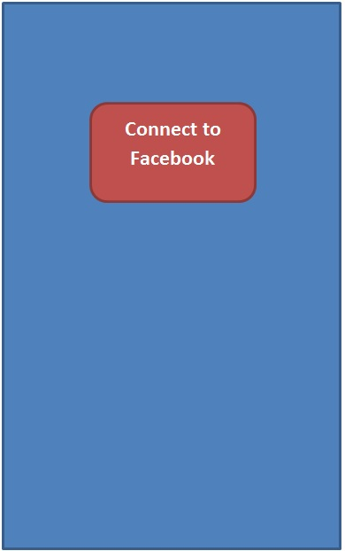
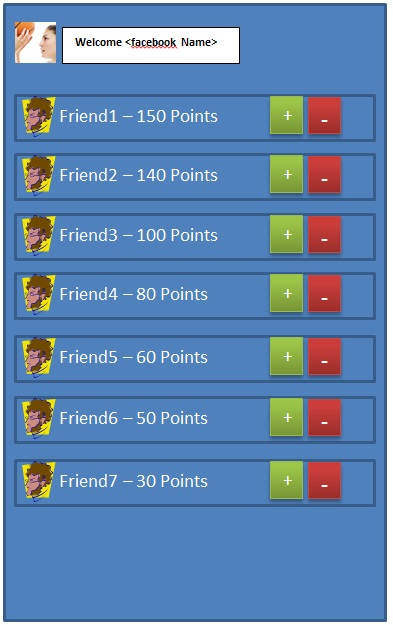

Introduction:
Thank you for taking the time to do this test.
Please follow the instructions below:-
- Create a free Github account here: Github
- Create a Free Github page here: Github Pages - or use a free web hosting of your choice
- Read the requirements and complete the test.
- Use your favorite GIT client to upload your app to the Github page you created
- Send an email to cvs@innuva.com with the subject [App-Test] (Your Name) and a link to your Github page and your Github Repository
Requiremnts
This Web Application helps you rate facebook friends using a very simple point rating system.
At all times, you can give any friend one positive point, or one negative point. Friend's Points will be be calculated as the sum of all points they receive from their friends.
Here is a list of the app features:-
- Connect to Facebook
- Retrieve and list Facebook Friends for the connected user
- For every friend, There is a score, and 2 buttons, a Plus Button and a Minus Button
- You can only Plus a Friend or Minus a Friend, not both at the same time, you can change your rating at any time
- If you Plus a friend many times, he still gets one positive Point, if you Minus a friend many times, he still gets one negative point
- When loading Friend list, If a friend is previously Plus-ed - the plus button should be pushed. If a friend is Minus-ed - the minus button should be pushed.
- Every Facebook friend gets a score, 1 positive point for every Plus and 1 negative point for every Minus.
- Friend List should be sorted from the Highest to the lowest score
Screens


Technology
- use Javascript Facebook SDK For facebook connection and friend list retrieval
- use Javascript SDK for Parse.com Objects For saving friends scores and friends plus/minus state for each user - No Server code, no Database required Parse Objects
- use Bootstrap for all UI Elements - it is not necessary that the UI is exactly the same as the mockup screens on this page Bootstrap
Deadline
Deliverables
Evaluation
Evaluation of your application will consider the following for 100 Points
- 10 Points - Correct use of Facebook SDK to create Facebook App, Connect User to App, Retrieve Users, Retrieve User Info, Friends
- 20 Points - Correct use of Parse.com to create Parse Objects, save Friend list, save friend scores and retrieve them correctly when needed
- 10 Points - Clean use of Bootstrap to create clean and portable HTML that would work seamlessly across browsers, Also the app should be user friendly
- 20 Points - Application Logic - Handling Plus and Minus functions and states across the app. Handling all special cases and exceptions.
- 20 Points - Code Organization - Use of organized code, comments, descriptive function names, indentation. Everything that makes the code easy to understand and build upon effortlessly
- 20 Points - App Design - use of modular design, object oriented design, design patterns, separation of presentation, data and app control. Everything that makes the app easy to extend and re-use
Bonus - If you wish to stand out in the crowd - you may try the following
- Bonus - 30 Points - Using a Javascript Framework of your choice
- Bonus - 30 Points - Making the UI Update instantly - Score and sorting order update when you click plus or minus, use pull to refresh friend list/scores/order, use SPA - no need to refresh the page
- Bonus - 30 Points - Making the app Mobile Friendly - Responsive
- Super Bonus - 100 Points - Making it as a Phonegap app for Android or iOS - using Facebook and Parse Plugins
Conclusion
Best of luck :)